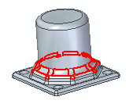

Optimize the quality of a model
-
Choose Inspect tab→Evaluate group→Optimize.
-
Click a body to optimize.
-
On the Optimize command bar, click the Options button.
-
In the Optimize dialog box, specify the options for optimizing the body:
-
Clean body — Cleans the input sheets of self-intersections and loop inconsistencies. You should always use this option prior to a full body optimization.
-
Full body optimization — Simplifies bodies by replacing B-splines with analytic definitions if possible, sets edge precision, and merges or remove redundant faces. It also identifies B-spline surfaces that are blend-like and replaces the B-spline surface with a Parasolid rolling ball type blend.
-
Simplify body only — Simplifies bodies by replacing B-splines with analytic definitions if possible, sets edge precision, and merges or remove redundant faces.
-
-
Click Finish.
-
Use the Deselect button to cancel the body selection and restart the command.
-
Use the Emphasis Faces and Edges button to display all tolerant edges and B-spline surfaces in a different color.

The emphasis color remains displayed until the command is complete or until you clear the Emphasis button. Once either of these events occurs, the body returns to the original color.
-
You can use the Report button on the Optimize dialog box to generate the Reports dialog box that displays the number of faces and edges found before and after the optimization process. You can use the Copy to Clip Board button to copy the report contents to the clipboard.
How do I
Inspect the geometry of a modelLearn more
Using Geometry InspectorLook up more details
Geometry Inspector commandGeometry Inspector dialog box
Optimize command
Optimize dialog box